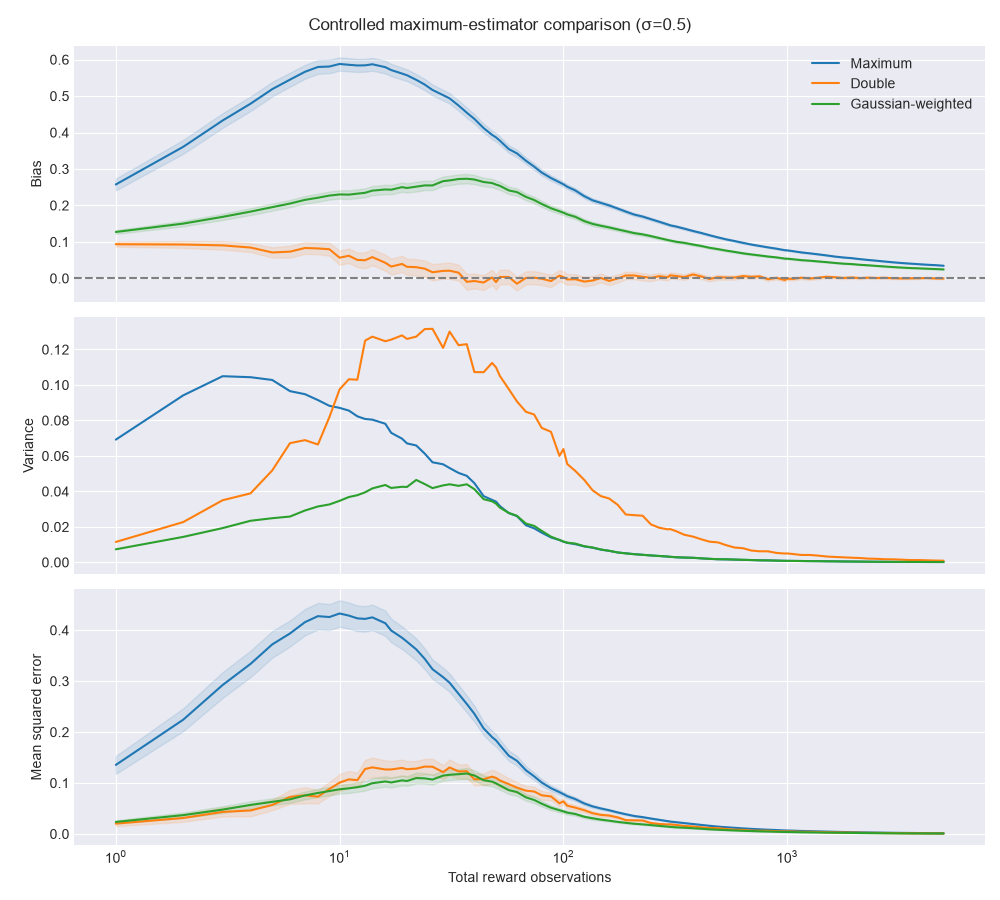
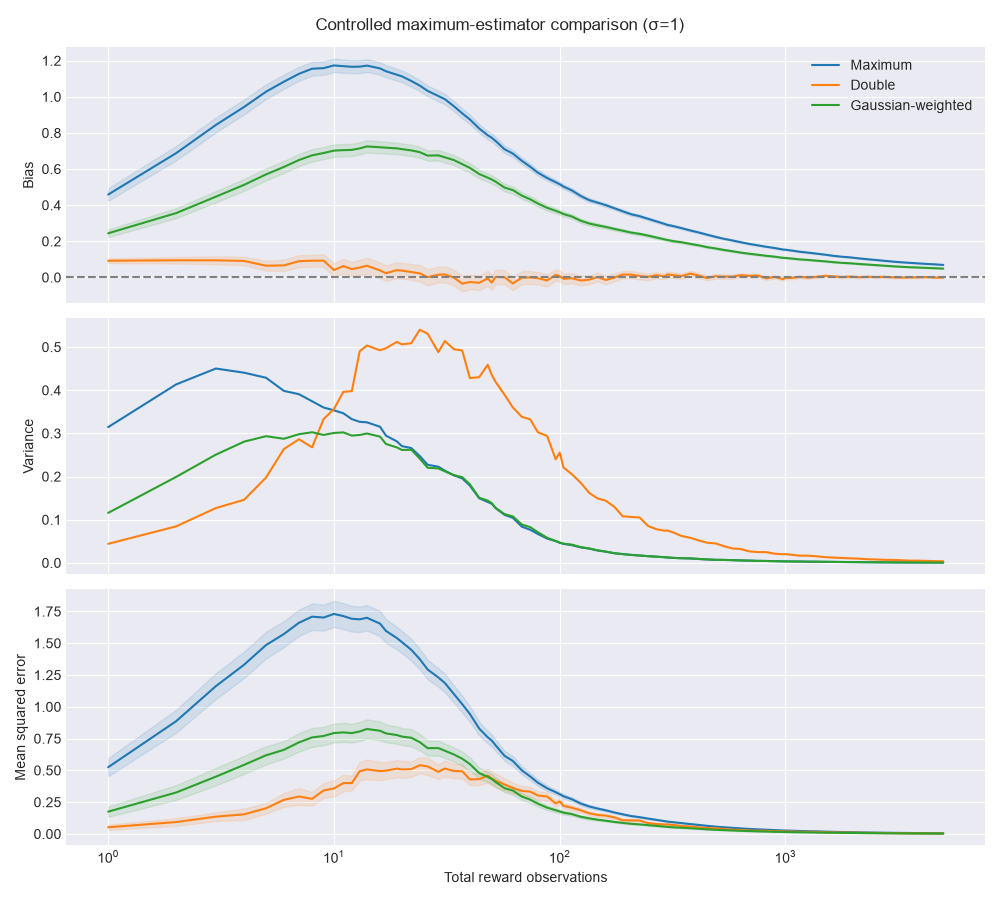
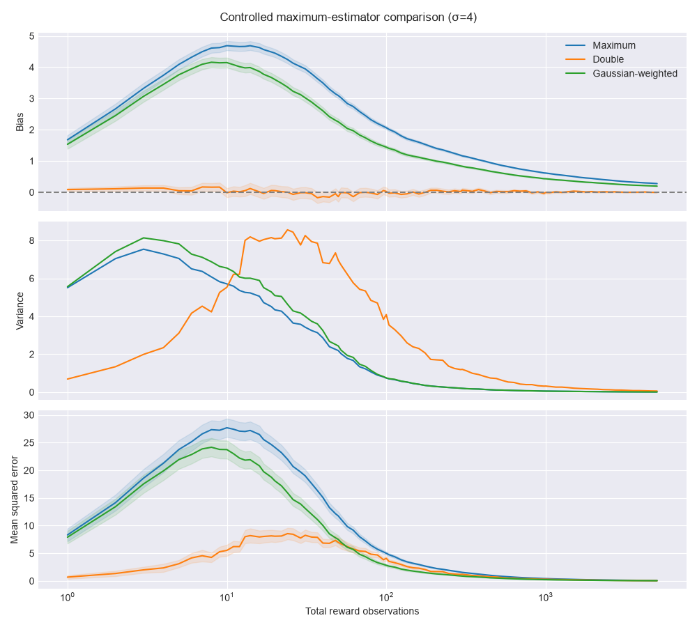

Maximum-expectation estimators under uniform observations¶
created: 2026-11-27
status: completed
tags: [maximum-estimation, gaussian-weighting, double-estimator]
1. Motivation¶
To separate estimator properties from action-selection feedback, compare estimators on the same exogenous observations.
2. Research question¶
How do Maximum, Double and Gaussian-weighted estimators differ in bias, variance and MSE under uniform sampling?
3. Hypothesis¶
The sample maximum is optimistically biased; Double can reduce selection bias, while Gaussian weighting trades bias and variance. This is a research expectation, not a verified result.
4. Experimental design¶
The rerun on 2026-11-28 sampled 10 arms uniformly with equal mean −0.1, Gaussian σ ∈ {0.5, 1, 4}, 5,000 observations, 1,000 runs, 100 Gaussian draws and random seed 44; observations were randomly split for Double estimation. A Gaussian arm with fewer than two observations receives initial standard error 1. At checkpoints, error is V̂−(−0.1), and MSE is mean squared error. The three noise settings reuse random streams, as do the estimators within a run.
Methodology and controls¶
For a target \(\theta=\max_a E[R_a]\), bias is \(E[\hat\theta-\theta]\), variance is \(E[(\hat\theta-E\hat\theta)^2]\), and MSE is \(E[(\hat\theta-\theta)^2]=\operatorname{Var}(\hat\theta)+\operatorname{Bias}(\hat\theta)^2\). Maximum uses \(\max_a\bar R_a\); Double selects with one random split and evaluates with the other; Gaussian weighting averages observed means with estimated winner probabilities from simulated Gaussian draws. Exact implementations and initialization are in the script.
The experiment script originated on branch experiments/8-uniform-estimator-comparison at 8a136aad3f7fec19a9d60380088d57856dd121c8 and was subsequently updated to apply the blog style and save this rerun’s results. The manifest records no parent (root). The repository also supplies the JAX RL library used by the scripts.
5. Results¶
The rerun produced the following estimates at 5,000 observations:
σ |
Estimator |
Bias |
Variance |
MSE |
|---|---|---|---|---|
0.5 |
Maximum |
0.03456 |
0.000170 |
0.001364 |
0.5 |
Double |
−0.00049 |
0.000921 |
0.000921 |
0.5 |
Gaussian-weighted |
0.02445 |
0.000168 |
0.000766 |
1 |
Maximum |
0.06911 |
0.000679 |
0.005456 |
1 |
Double |
−0.00099 |
0.003683 |
0.003684 |
1 |
Gaussian-weighted |
0.04890 |
0.000673 |
0.003064 |
4 |
Maximum |
0.27645 |
0.010869 |
0.087294 |
4 |
Double |
−0.00395 |
0.058923 |
0.058939 |
4 |
Gaussian-weighted |
0.19559 |
0.010768 |
0.049023 |
The checkpoint results contain aggregate metrics and standard errors; the run log records the settings and printed summaries. The older Figure 12–14 screenshots are retained separately and are not treated as evidence of this rerun.
Rerun figures¶
Each figure shows bias, variance and mean squared error against the number of observations. Shaded bands are pointwise normal intervals (±1.96 standard errors) for bias and MSE; variance has no band.

Reward standard deviation σ = 0.5.

Reward standard deviation σ = 1.

Reward standard deviation σ = 4.
6. Analysis¶
At 5,000 observations, Maximum is positively biased at each noise level. Double has near-zero observed bias but higher variance than Gaussian-weighted; Gaussian-weighted has the lowest observed MSE of the three at this checkpoint. These are point estimates, not a paired significance test. Uniform exogenous sampling removes the policy feedback present in Q-learning experiments, but random counts, initially unobserved arms, sample splitting and the SE fallback still affect the estimators.
7. Conclusion¶
The rerun supports the predicted optimism of Maximum and shows a bias–variance tradeoff between Double and Gaussian-weighted estimation under equal means and uniform sampling. It does not establish which method is best for adaptive reinforcement-learning policies.
8. Limitations¶
The saved CSV contains aggregate checkpoint summaries, not individual-run trajectories. Results use one random seed and pointwise normal standard errors; the figure bands are not simultaneous intervals. Equal Gaussian arm means and uniform sampling are restrictive, and the observed MSE ranking at one checkpoint is not a general guarantee.
9. Follow-up experiments¶
Sweep the best-arm gap (exp-009); compare in an MDP with controlled policies (exp-008b).
10. References¶
Sutton & Barto, Reinforcement Learning: An Introduction, 2nd ed., §6.7, book.
van Hasselt (2010), Double Q-learning.
D’Eramo, Restelli & Nuara (2016), Estimating Maximum Expected Value through Gaussian Approximation.